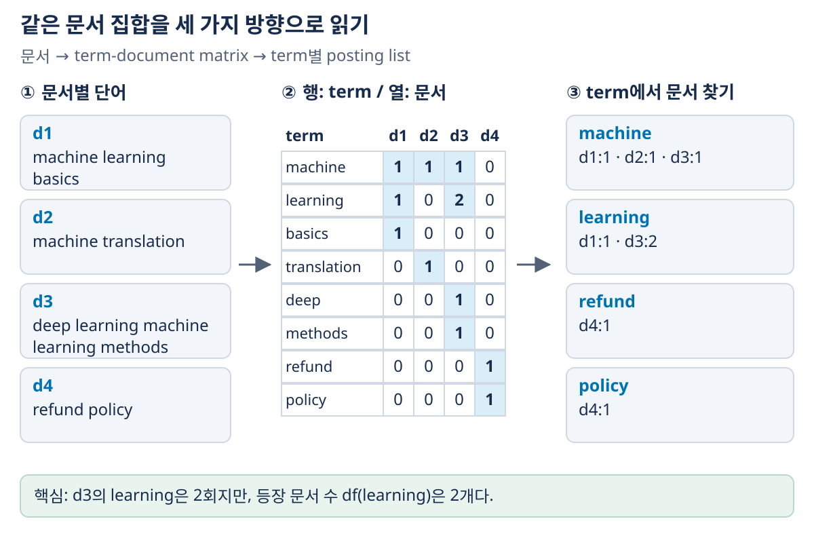
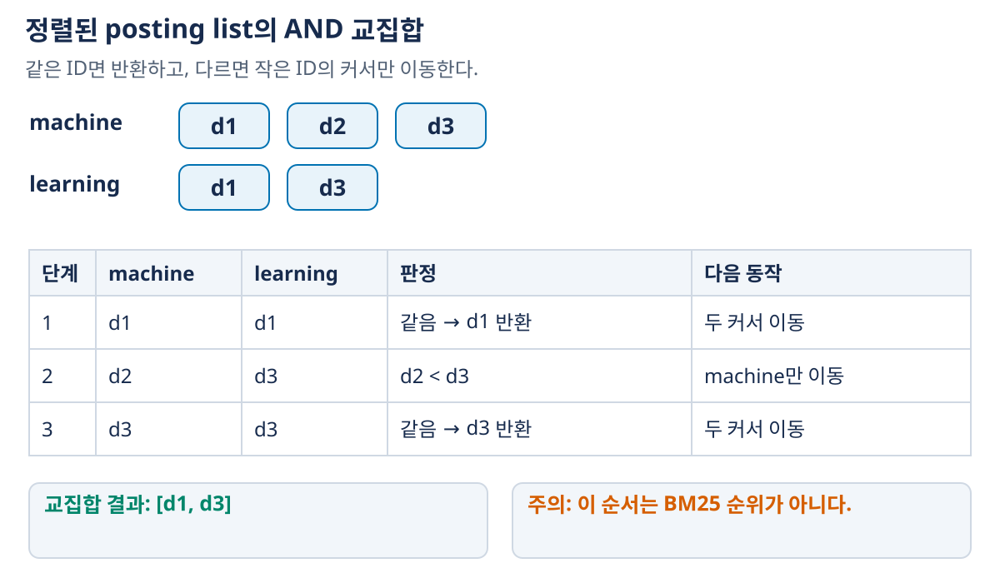

01. 검색의 기본과 역색인
검색의 첫 번째 문제는 질문과 관련 있을 문서를 전체 문서 중에서 골라내는 것이다. 문서를 모두 읽고 점수를 계산할 수도 있지만, 문서가 많아지면 질문에 등장한 단어가 있는 위치부터 찾는 편이 유리하다. 역색인은 이 출발점을 제공한다. 이 장에서는 문서 → 단어별 문서 목록 → 후보 집합 → 순위로 이어지는 과정을 만든다.
1. 입력·출력과 용어
| 용어 | 의미 | 이 교재의 예 |
|---|---|---|
| 문서(document) | 검색하고 반환하는 단위 | 웹페이지, 문단, RAG 청크 |
| 문서 집합(corpus) $D$ | 검색 대상 전체 | $D=\{d_1,d_2,d_3,d_4\}$ |
| 질의(query) $q$ | 사용자가 찾고 싶은 내용을 표현한 입력 | machine learning |
| 용어(term) | 검색 표현의 한 좌표를 이루는 항목 | machine, learning |
| 토큰(token) | 특정 분할 규칙으로 얻은 단위 | 공백 단어, 형태소, subword 등 |
| 관련성(relevance) | 그 문서가 질의의 정보 요구를 충족하는 정도 | 학습 알고리즘 질문에 대한 적절한 설명 |
| 검색 후보 | 점수를 계산하거나 후속 처리할 문서 | 해당 단어를 포함한 문서들 |
| 순위(ranking) | 정한 점수·규칙에 따라 후보를 정렬한 결과 | $[d_3,d_1,d_2]$ |
검색기의 출력은 보통 (문서 ID, 점수)의 상위 $K$개 목록이다. 관련성의 정답 라벨과 검색기가 계산한 점수는 다르다. 단어가 많이 겹쳐 점수가 높아도 실제 질문에 답하지 못할 수 있다.
함께 사용할 작은 문서 집합
이 장과 02장은 다음 집합을 재사용한다. 예제를 분명하게 만들기 위해 소문자화 후 공백으로 나누며, 불용어 제거·어간 추출·동의어 확장은 하지 않는다.
| 문서 | 텍스트 | 길이: 공백 토큰 수 |
|---|---|---|
| $d_1$ | machine learning basics |
3 |
| $d_2$ | machine translation |
2 |
| $d_3$ | deep learning machine learning methods |
5 |
| $d_4$ | refund policy |
2 |
02장도 이 집합을 그대로 사용한다. 문서 내용·토큰화가 바뀌면 통계와 점수도 다시 계산해야 한다.
2. 문서를 벡터로 표현하기
어휘 순서를 [machine, learning, basics, translation, deep, methods, refund, policy]로 고정하면 각 문서의 등장 횟수를 벡터로 쓸 수 있다.
| term | $d_1$ | $d_2$ | $d_3$ | $d_4$ |
|---|---|---|---|---|
| machine | 1 | 1 | 1 | 0 |
| learning | 1 | 0 | 2 | 0 |
| basics | 1 | 0 | 0 | 0 |
| translation | 0 | 1 | 0 | 0 |
| deep | 0 | 0 | 1 | 0 |
| methods | 0 | 0 | 1 | 0 |
| refund | 0 | 0 | 0 | 1 |
| policy | 0 | 0 | 0 | 1 |
행이 term, 열이 document인 term-document matrix다. 라이브러리에 따라 행과 열을 반대로 두기도 하므로 모양만 보고 역할을 추측하지 않는다. 어휘가 커져도 한 문서에 등장하는 단어는 일부이므로 많은 값이 0이다. 이것이 희소(sparse) 표현이다.

그림 읽기: 왼쪽 문서의 단어를 센 뒤 가운데에서 해당 term 행·문서 열을 찾고, 오른쪽에서는 같은 행의 0이 아닌 문서만 모은다. learning 행의 [1,0,2,0]이 (d1,1),(d3,2)로 바뀌는 과정을 추적하자. 숫자 2는 d3의 반복 횟수이며, 서로 다른 문서 두 개를 뜻하는 $df=2$와는 별도의 통계다.
빈도 벡터는 단어 순서를 잃는다. dog bites man과 man bites dog는 같은 bag-of-words 벡터가 된다. 희소 검색이 빠르고 해석하기 쉽다는 장점과, 어순·동의 표현을 충분히 다루기 어렵다는 한계가 함께 생긴다.
질의도 같은 어휘 축으로 표현해야 한다. machine learning은 [1,1,0,0,0,0,0,0]이다. 문서와 질의에 서로 다른 term 좌표를 쓰면 내적을 계산해도 의미가 없다.
3. 역색인: 문서에서 단어로 보던 방향을 뒤집기
정방향으로는 문서 ID → 그 문서의 단어들을 저장한다. 역색인(inverted index)은 단어 → 그 단어가 있는 문서들을 저장한다. 단어에 대응하는 문서 목록을 posting list라고 하고, 목록의 개별 항목을 posting이라고 한다.
문서 읽기 term별로 모으기 역색인
d1: machine ... → (machine, d1) → machine: [(d1,1),(d2,1),(d3,1)]
d2: machine ... (machine, d2) learning: [(d1,1),(d3,2)]
d3: ... learning (learning,d3) basics: [(d1,1)]
괄호의 두 번째 값은 문서 내 term 빈도다. Boolean 검색만 필요하면 문서 ID만으로 충분하지만, BM25는 빈도·문서 길이·문서 빈도 등의 통계도 사용한다. 구문 검색은 term의 위치 정보가 추가로 필요하다.
구축 단계와 병렬화
- 문서를 같은 전처리 규칙으로 토큰화한다.
- 문서별 term 빈도를 세어
(term, docID, count)를 만든다. - 같은 term의 항목을 모은다.
- 문서 ID 등 정한 기준으로 정렬한 posting list를 저장한다.
문서별 처리인 1~2는 독립적으로 병렬화할 수 있다. 3은 같은 term이 같은 작업자로 모이도록 데이터를 재분배해야 한다. 문서별 변환과 term별 집계를 구별해야 하는 이유다. 병렬 작업자가 많아져도 같은 term을 모으는 통신·정렬 비용이 저절로 사라지지는 않는다.
4. Boolean 검색은 포함 조건을 검사한다
질의 machine AND learning은 두 posting list의 교집합이다.
machine: [d1, d2, d3]
learning: [d1, d3]
교집합: [d1, d3]
문서 ID 오름차순 목록 두 개에 각각 커서를 둔다. ID가 같으면 결과에 넣고 두 커서를 옮긴다. 다르면 작은 ID의 커서만 옮긴다. 버린 작은 ID는 다른 목록의 현재 ID보다 작기 때문에 앞으로 일치할 수 없다. 각 커서는 뒤로 가지 않으므로 목록 길이가 $m,n$일 때 비교 횟수는 $O(m+n)$ 범위다.

그림 읽기: 1단계는 d1이 같아 반환하고, 2단계는 d2만 건너뛰고, 3단계는 d3을 반환한다. 2단계에서 두 커서를 모두 이동하면 learning의 d3을 먼저 지나쳐 교집합을 놓칠 수 있다. 마지막 결과의 ID 순서는 관련성 순위를 계산한 결과가 아니다.
machine OR learning은 합집합이므로 $d_2$도 후보가 된다. AND는 조건을 모두 포함하는 후보를 찾는 규칙이고, BM25 등의 점수는 관련성 순위를 정하는 규칙이다. 일반적인 검색을 항상 AND로 제한하면 질문의 한 단어가 없는 유용한 문서를 놓칠 수 있다.
5. 후보 선택과 Top-k는 다른 문제다
Boolean AND는 $\{d_1,d_3\}$를 반환할 뿐, 어느 문서를 먼저 읽어야 하는지 말하지 않는다. Top-k에는 반드시 무엇을 기준으로 더 좋다고 하는지가 필요하다.
| 순위 기준 | 같은 후보들의 순서가 결정되는 이유 |
|---|---|
| 문서 ID 오름차순 | 문서 식별자의 크기 |
| 문서별 고정 PageRank 내림차순 | 질의와 무관한 문서 중요도 |
| TF-IDF·BM25 | 질의 term·문서 통계에 따른 관련성 점수 |
| Cross-Encoder | 질의와 문서를 함께 읽은 모델의 점수 |
문서 ID가 작다는 것은 관련성이 높다는 뜻이 아니다. 어떤 순위 기준을 원하는지에 따라 탐색 순서와 안전한 종료 조건이 달라진다.
‘K개 찾았으니 종료’가 가능한 조건
문서 ID 순위를 원하고 posting list가 문서 ID 순서라면 교집합을 내보내는 순서가 곧 원하는 순위다. 따라서 $K$개를 찾으면 종료할 수 있다. 그러나 BM25 순위를 원하는데 처음 만난 $K$개 문서만 반환하면 뒤에 있는 더 높은 점수 문서를 놓친다.
PageRank 예시의 상한·하한
두 목록 모두 같은 문서별 고정 점수의 내림차순으로 정렬되고, 동일 점수 문서의 순서도 같은 tie-break 규칙을 쓴다고 하자. 두 목록의 공통 정렬 키로 교집합을 탐색하면 아직 찾지 못한 교집합 문서의 점수는 각 목록의 남은 최댓값을 넘지 못한다.
지금까지 찾은 $K$개 중 가장 낮은 점수를 $LB$라고 할 때, $K$개가 확보되어 있고 $LB\ge UB$이면 더 높은 점수의 결과는 남아 있지 않다. 동점 문서의 반환 ID까지 일관되게 정해야 한다면 동점 처리 규칙도 종료 판정에 포함한다.
이 논리는 미발견 교집합 문서가 여전히 양쪽 미처리 구간에 남아 있다는 불변식에 의존한다. 동점이 있는데 점수만 비교하며 서로 다른 문서를 건너뛰거나, 목록별 정렬 점수가 서로 다르면 그대로 적용할 수 없다. 여러 term의 기여를 더하는 일반 BM25의 안전한 조기 종료는 그 합산 점수에 대한 별도의 상한이 필요하다. 위 PageRank의 커서 상한을 일반 BM25에 그대로 적용하지 않는다.
6. 희소·밀집 표현과 인덱스를 구별하기
희소 벡터는 보통 어휘 축을 가지고 역색인을 활용한다. 밀집 벡터는 학습된 연속 좌표를 가지고 벡터 인덱스를 활용한다. 다만 ‘희소=사람이 만든 규칙, 밀집=학습’이라는 등식은 성립하지 않는다. 학습한 희소 표현도 있으며 04장에서 다룬다.
또한 Cross-Encoder는 BERT를 사용하지만 문서마다 독립된 단일 벡터를 만들어 ANN에 넣는 검색기는 아니다. 표현을 만드는 방법, 점수를 계산하는 방법, 후보를 찾는 자료구조는 따로 확인해야 한다.
7. 확인 질문과 해설
- $d_3$에서
learning을 한 번 더 반복하면 posting list의 문서 ID와 빈도는 어떻게 바뀌는가? - AND 검색 결과 두 개를 찾았을 때 BM25 Top-2가 확정되는가?
- 문서에는 형태소 분석을 하고 질의에는 하지 않았다면 무엇이 잘못될 수 있는가?
- PageRank 내림차순 목록에서 동점 문서 순서가 서로 달라도 점수만 비교하는 merge가 안전한가?
학습용 해설
learning의 문서 ID 목록은 그대로이고 $d_3$의 빈도가 2에서 3이 된다. $df$는 문서 개수이므로 증가하지 않는다. 문서 길이는 증가한다.- 아니다. 뒤의 후보가 더 높은 점수를 가질 수 있다. 목표 순위와 같은 순서로 열거되거나, 미처리 후보가 현재 Top-2를 이길 수 없다는 상한이 있어야 한다.
- 같은 의미의 표현이 서로 다른 term으로 남아 매칭되지 않을 수 있다. 인덱싱과 질의 처리의 토큰화·정규화 규약을 맞춰야 한다.
- 안전하지 않다. 예를 들어 한 목록의 동점 순서가
[A,B], 다른 목록이[B,A]이면 잘못 건너뛸 수 있다.(점수 내림차순, docID 오름차순)같은 공통 전체 순서를 둔다.
그림으로 복습하기
- 표현 변환 그림에서
learning의 빈도·문서 수를 각각 설명한다. - posting merge 그림에서 커서가 이동하는 이유와 놓치지 않는 조건을 설명한다.
- 역색인은 후보를 찾는 자료구조이고, 관련성 점수는 후보의 순위를 정하는 규칙이다. 다음 장에서 같은 문서들의 TF-IDF·BM25를 계산한다.